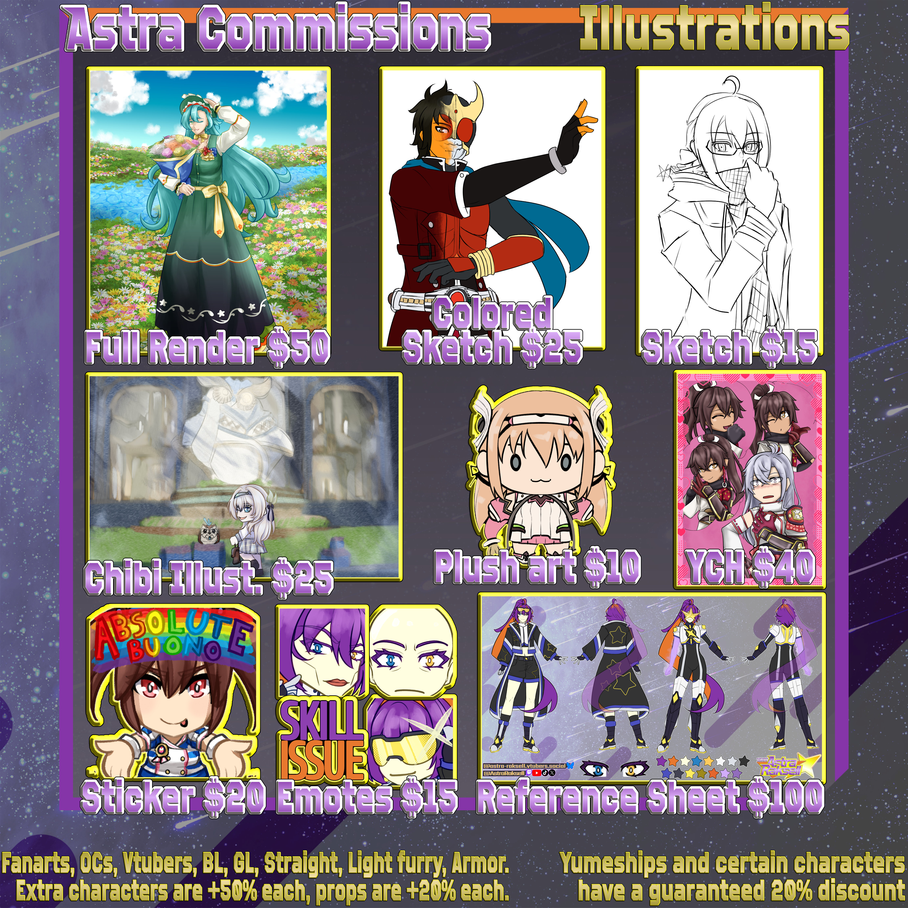

Astra Raksell Super Space Adventurer
VTuber · Artist · Lore-crafter.
Mission Log
Since young I've always wanted to be a content creator of some kind. After the boom in Vtubing, I figured out this would fit perfectly for my goals. I love writing, drawing, and working on my overambitious lore stuff. Big fan of Tokusatsu, JRPGs, and platformers.
I enjoy writing roleplays and I indulge in yumeshipping every now and then. I have a lot of fun with character design and worldbuilding, and I like to share that process with other people who are into it.
This terminal is home base for everything related to the Astra Raksell project — character lore, art archives, and whatever else gets dragged in from the void.
Commissions
Art commissions are currently open over on Vgen. Check the sheet below for pricing and details.

 Commission Info ↗
Commission Info ↗